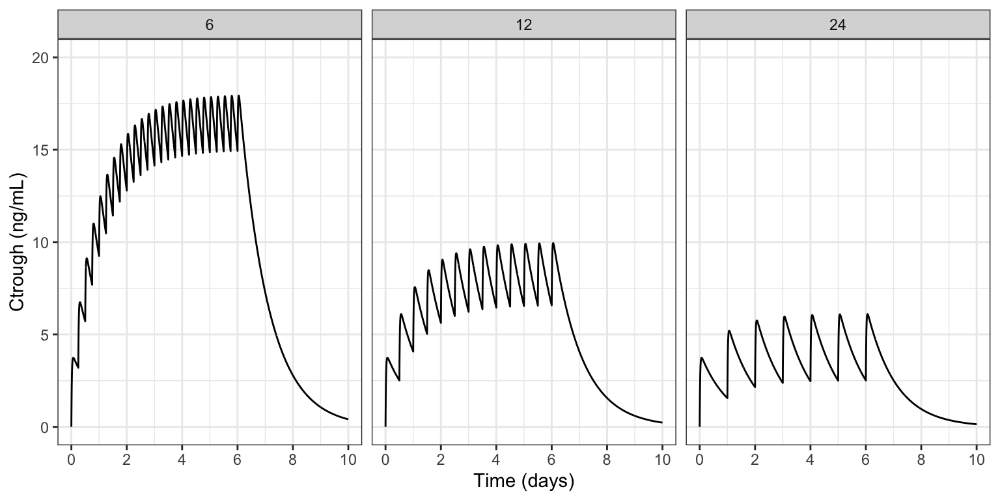
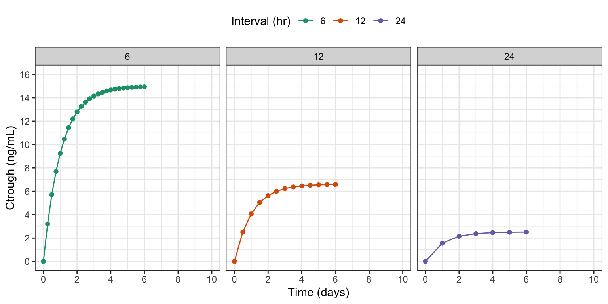
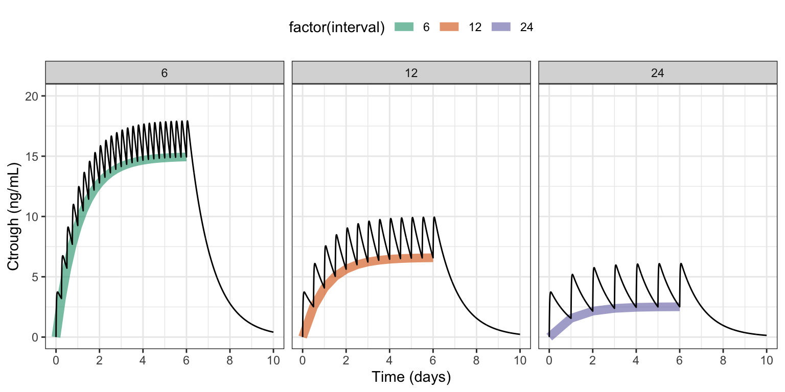

e0 <- evd(amt = 100, ii = 6, until = 145)
e1 <- evd(amt = 100, ii = 12, until = 145)
e2 <- evd(amt = 100, ii = 24, until = 145)
data <- as_data_set(e0, e1, e2) %>% mutate(interval = II)1 Introduction
mrgsolve typically returns simulated outputs in rectangular format, with rows advancing in time for different subjects and columns giving you different outputs, including the simulated values, quantities calculated inside the model, items carried from the input data, etc.
Sometimes, you’d like to record what is happening inside the simulation in a way that doesn’t match up with the standard rectangular format. For example,
- Did any one reach a critically low platelet count?
- Who was it?
- When did it happen?
- While running dynamic dosing simulations
- When were doses changed?
- What were they changed from? and to?
- What were the circumstances that lead to those dose adjustments?
- Dynamic sampling schedules
- Can I get predictions at times that I didn’t specify in the input data?
- Can I control the density of sampling depending on how the system advances?
This blog post will show you a simple way to log information as a simulation progresses and work with it after the simulation ends. We will use a C++ library to create records in JSON format for the data associated with these different events. When the simulation ends, we’ll recover that JSON code, parse it, and work with it in R.
1.1 Example
As an example, we’ll run a one-compartment PK model with 100 mg administered at at different dosing intervals: every 6, 12, or 24 hours.
Sounds pretty basic, right? The “new” part of this is we’ll write some code inside the model that will capture the predose concentration for each dose and write that information out to a file in JSON format.
Don’t get too hung up on the specifics here. I invented this as an example to show you the mechanics of how to collect information inside your model and save it in a format you can get to later. You might have other, more nuanced use cases where you could use this same approach.
1.2 Example simulation
Here is the data set we’ll use:
NoteSee how we made the data
data ID TIME AMT II ADDL CMT EVID interval
1 1 0 100 6 24 1 1 6
2 2 0 100 12 12 1 1 12
3 3 0 100 24 6 1 1 24And we load the model here:
mod <- mread("ctrough-log.mod")An example simulation from the model is included below.
out <- mrgsim(mod, data, end = 240, delta = 0.1, recover = "interval")
sims <- as_tibble(out)
ggplot() +
geom_line(data = sims, aes(TIME/24, CP)) +
facet_wrap(~interval) +
scale_x_continuous(breaks = seq(0,10,2)) +
scale_y_continuous(limits = c(0,20)) +
labs(x = "Time (days)", y = "Ctrough (ng/mL)")

As expected, the most accumulation is seen in the 6 hour dosing interval and the least in the 24 hour interval. In the model code, we’ll show you how to log each pre-dose concentration for each individual inside the simulation model and work with that data after the simulation ends.
2 The model
We noted above that the PK model itself is pretty basic; the interesting parts include:
- Using the BH plugin to access a C++ library for generating JSON
- Collecting simulated data each time we administer a dose, and logging that information in JSON format
- Once the simulation is finished, write the JSON output to a file
- We will read that file once the simulation is completed and work with it
I’ve included the complete model code here; you can look at it to get a birds eye view. I’ll be going block-by-block, explaining what is happening in the sections below.
NoteView the full model code
posts/model/ctrough-log.mod
$PLUGIN BH
$GLOBAL
#include <iostream>
#include <fstream>
#include <boost/json/src.hpp>
#include <boost/json.hpp>
namespace json = boost::json;
json::array logg;
$PARAM CL = 1, V = 25, KA = 2.5, interval = 24
$PKMODEL cmt = "A,B", depot = TRUE
$PREAMBLE
logg.clear();
$PK
if(NEWIND <=1 ) {
int dosen = 0;
}
$ERROR
capture CP = B/V;
// Part 1:
if(EVID==1) {
json::object obj = {
{"id", ID},
{"dosen", ++dosen},
{"interval", interval},
{"time", TIME},
{"ctrough", CP}
};
logg.push_back(obj);
}
// Part 2:
if(self.nrow == self.rown+1) {
std::ofstream logFile;
logFile.open("ctrough.json", std::ios::trunc);
logFile << json::serialize(logg) << std::endl;
logFile.close();
logg.clear();
}2.1 Blocks
Use the BH $PLUGIN to get access the the Boost.JSON library.
$PLUGIN
BHRecall that a plugin is a way to bring additional syntax or code in to your model that you typically wouldn’t use. Boost is an open-source C++ library, providing sophisticated, high-performance numerical computation code to your model, including the Boost.JSON API for working with JSON code in C++.
Boost : https://www.boost.org/ Boost.JSON documentation
In $GLOBAL, we include the Boost.JSON header files and load some additional C++ functionality for writing the JSON to file.
$GLOBAL
#include <iostream>
#include <fstream>
#include <boost/json/src.hpp>
#include <boost/json.hpp>We also alias the boost::json namespace to a friendlier name (just json) and we initialize an array called logg where we will collect records for the JSON-formatted output.
namespace json = boost::json;
json::array logg;With this aliasing in place, we can initialize with array with json::array logg rather than boost::json::array logg. This is optional; you can use the full name with no change in result.
In $PREAMBLE, we clear or reset the json array; this gets called just once at the very start of the simulation run.
$PREAMBLE
logg.clear();2.1.1 Most of the work happens in $ERROR
$ERROR
capture CP = B/V;
// Part 1:
if(EVID==1) {
json::object obj = {
{"id", ID},
{"dosen", ++dosen},
{"interval", interval},
{"time", TIME},
{"ctrough", CP}
};
logg.push_back(obj);
}
// Part 2:
if(self.nrow == self.rown+1) {
std::ofstream logFile;
logFile.open("ctrough.json", std::ios::trunc);
logFile << json::serialize(logg) << std::endl;
logFile.close();
logg.clear();
}There are two Parts to discuss here.
In Part 1 we create a json object for a single log entry
- Use the
boost::json::objecttype - The constructor is through an initialization list, enclosed in curly braces
{} - Create an output row as a comma-separated
name,valuepair, also enclosed in{}- Put the name first as a quoted string
- Put the value next as a number or a string
- For example
{"ctrough", CP}
- Use the
push_back()method to append this row to theloggarray
In Part 2 we write the completed boost::json array to a file
- We check that we are at the last record in the output data set
self.rownis the current row number (zero-indexed)self.nrowis the total number of rows
- Then we write the data to file
- First
opening the file - Then serialize the
boost::jsonarray, writing it to the file - Finally close the file then
- Clear the
boost::jsonarray for safety
- First
Remember: you will probably be logging something other than Ctrough in your simulation model. Take this code as an example to help you create your own JSON objects at the appropriate time with the information you need.
3 Run the simulation
We simulate from this model just like we would any other model.
out <- mrgsim(mod, data, end = 240, delta = 0.1, recover = "interval")
outModel: ctrough-log_mod
Dim: 7206 x 6
Time: 0 to 240
ID: 3
ID TIME A B CP interval
1: 1 0.0 0.00 0.00 0.000 6
2: 1 0.0 100.00 0.00 0.000 6
3: 1 0.1 77.88 22.07 0.883 6
4: 1 0.2 60.65 39.18 1.567 6
5: 1 0.3 47.24 52.41 2.096 6
6: 1 0.4 36.79 62.63 2.505 6
7: 1 0.5 28.65 70.50 2.820 6
8: 1 0.6 22.31 76.54 3.062 6After the simulation runs, we need to read in the logged Ctrough data. The raw JSON code was saved to ctrough.json; the first two Ctrough points looks like this:
I’ve made the JSON code “pretty” to show you; in the file it won’t look as nicely formatted as this.
ctrough.json
[
{
"id": 1E0,
"dosen": 1,
"interval": 6E0,
"time": 0E0,
"ctrough": 0E0
},
{
"id": 1E0,
"dosen": 2,
"interval": 6E0,
"time": 6E0,
"ctrough": 3.1976729884724957E0
},We’ll use the RcppSimdJson package to read in the file we wrote in the model.
RcppSimdJson: https://cran.r-project.org/package=RcppSimdJson
ct <- RcppSimdJson::fload(here("ctrough.json"))
slice(ct, 1:3, .by = id) id dosen interval time ctrough
1 1 1 6 0 0.000000
2 1 2 6 6 3.197673
3 1 3 6 12 5.713053
4 2 1 12 0 0.000000
5 2 2 12 12 2.515380
6 2 3 12 24 4.071855
7 3 1 24 0 0.000000
8 3 2 24 24 1.556475
9 3 3 24 48 2.152438RcppSimdJson::fload() returned our data nicely formatted in a data frame. When you are logging information, it doesn’t have to all fit into a square data structure. You can request the data back as a list as well. For example:
ct_list <- RcppSimdJson::fload(here("ctrough.json"), max_simplify_lvl = "list")
length(ct_list)[1] 45ct_list[[2]]$id
[1] 1
$dosen
[1] 2
$interval
[1] 6
$time
[1] 6
$ctrough
[1] 3.197673ggplot(ct, aes(time/24, ctrough, color = factor(interval))) +
geom_line() + geom_point() +
facet_grid(~interval) +
scale_y_continuous(limits = c(0,16), breaks = seq(0,16,2)) +
scale_x_continuous(limits = c(0,10), breaks = seq(0,10,2)) +
labs(x = "Time (days)", y = "Ctrough (ng/mL)", color = "Interval (hr)")

sims <- as_tibble(out)
ggplot() +
geom_line(data = ct, aes(time/24, ctrough, col = factor(interval)),
lwd = 3, alpha = 0.6) +
geom_line(data = sims, aes(TIME/24, CP)) +
facet_wrap(~interval) +
scale_x_continuous(breaks = seq(0,10,2)) +
scale_y_continuous(limits = c(0,20)) +
labs(x = "Time (days)", y = "Ctrough (ng/mL)", color = "Interval (hr)")

4 Alternate: write JSON output to model environment
It might not be that easy or safe to write outputs to a file on disk. In that case, you can form the JSON object like we did in the model above, and assign it as an R object in the model environment.
Part 2 of the $ERROR block from the original model has been updated to this:
$ERROR
capture CP = B/V;
// Part 1:
if(EVID==1) {
json::object obj = {
{"id", ID},
{"dosen", ++dosen},
{"interval", interval},
{"time", TIME},
{"ctrough", CP},
{"source", "env"}
};
logg.push_back(obj);
}
// Part 2:
if(self.nrow == self.rown+1) {
std::string result = json::serialize(logg);
Rcpp::Environment env = mrgx::get_envir(self);
env.assign("ctrough.json", result);
logg.clear();
}- Serialize the JSON object
- Get the environment from the model object
- Assign the JSON result in the environment
NoteView the full alternate model code
posts/model/ctrough-log-env.mod
$PLUGIN BH Rcpp mrgx
$GLOBAL
#include <boost/json/src.hpp>
#include <boost/json.hpp>
namespace json = boost::json;
json::array logg;
$PARAM CL = 1, V = 25, KA = 2.5, interval = 24
$PKMODEL cmt = "A,B", depot = TRUE
$PREAMBLE
logg.clear();
$PK
if(NEWIND <=1 ) {
int dosen = 0;
}
$ERROR
capture CP = B/V;
// Part 1:
if(EVID==1) {
json::object obj = {
{"id", ID},
{"dosen", ++dosen},
{"interval", interval},
{"time", TIME},
{"ctrough", CP},
{"source", "env"}
};
logg.push_back(obj);
}
// Part 2:
if(self.nrow == self.rown+1) {
std::string result = json::serialize(logg);
Rcpp::Environment env = mrgx::get_envir(self);
env.assign("ctrough.json", result);
logg.clear();
}4.1 Working example
The simulation runs like before:
alt <- mread("ctrough-log-env.mod")
out <- mrgsim(alt, data, end = 240, delta = 0.1, recover = "interval")Now, to extract the result, we need to
- Pull the JSON code from model environment then
- Parse the code to get the result in R
env <- env_get(out@mod)
ct2 <- RcppSimdJson::fparse(env$ctrough.json)
head(ct2) id dosen interval time ctrough source
1 1 1 6 0 0.000000 env
2 1 2 6 6 3.197673 env
3 1 3 6 12 5.713053 env
4 1 4 6 18 7.691720 env
5 1 5 6 24 9.248195 env
6 1 6 6 30 10.472562 env5 Discussion
Why JSON? With this Boost.JSON approach, I really like how simple the syntax is to create different rows in the output. I like not having to think about the type of data when constructing a row. And I like the ease of collecting the rows into a single, organized, growing container to return (or write out) at the end of the simulation. I’ve experimented with several ways to get additional information out of an mrgsolve simulation. For example, you can use C++ STL containers to collect information for the different columns and then use the Rcpp plugin to create an R data.frame on exit, assigning that to the model environment. I usually use a double-ended queues (std::deque) for this because they grow easily. It works great and it’s pretty easy; just not as easy as this JSON setup.
Is the JSON performant? I’ve done a little pressure testing on this approach, putting out some fairly large data sets. So far, it’s worked really well. Of course this will slow down your model a little bit; but so far it’s been difficult to detect a meaningful change in simulation run time with the logging on or off. Of course, this will depend on your application and there will be some limit. But especially if you are only logging events where you might have 1k to 50k rows in the output, it should be no problem. But don’t let that limit you; I’ve created some fairly large, dense outputs and so far I’ve been very happy with the performance.
A drawback One downside is that I don’t believe you can interact with your data once you have created the JSON object. There’s probably a way to do it, but might not be that easy. When I was collecting information in STL containers, it was easy to iterate back in time if I needed to check on information or do some computation. It took a little bookkeeping, but it was worth it. Nevertheless, if you are only saving outputs, the JSON solution works great.